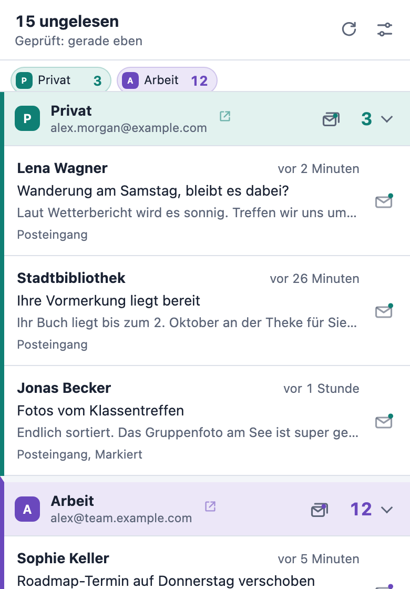

Neue E-Mails
auf einen Blick.
Die Zahl ungelesener E-Mails in der Symbolleiste und Desktopbenachrichtigungen für jedes Gmail-Konto, mit dem du in Chrome angemeldet bist. Ohne zusätzliche Anmeldung, ohne OAuth, ohne Server.
Kostenlos und Open Source. In 8 Sprachen verfügbar.

 4
4Du entscheidest, was wichtig ist
Stelle jeden Posteingang, jeden Tab, Markiert, Wichtig oder eines deiner Labels auf eine von drei Stufen. Probier es hier aus: Symbol und Benachrichtigung folgen deiner Auswahl, genau wie die Live-Vorschau auf der Einstellungsseite.
- AusWird nicht geprüft
- ZählenZählt zur Ungelesen-Zahl am Symbol in der Symbolleiste
- BenachrichtigenWird gezählt, dazu eine Desktopbenachrichtigung
Was du siehst
 4
4Mehrere Postfächer, klar getrennt
Jedes Gmail-Konto, mit dem du in Chrome angemeldet bist, wird automatisch erkannt und hat in der Liste einen eigenen Bereich.
Name, Farbe und Ton für jedes Postfach
Unterscheide Postfächer auf einen Blick und am Ton, wenn eine Benachrichtigung kommt.
Eine Summe oder eine Zahl pro Postfach
Zeige 15 am Symbol oder 3/12, um jedes Postfach einzeln zu sehen.
Deine Labels, aus einer Liste gewählt
Labels werden direkt aus Gmail gelesen, du musst also nie einen Namen eintippen.
Handeln, ohne Gmail zu öffnen
Erledige neue E-Mails, egal wo du gerade in Chrome bist.
Aus der Benachrichtigung als gelesen markieren
Ein Klick auf die Benachrichtigung, und die E-Mail ist auch in Gmail gelesen.
Ein ganzes Postfach leeren
Markiere alle ungelesenen E-Mails eines Postfachs auf einmal als gelesen, nach einer kurzen Bestätigung.
Die richtige E-Mail öffnen
Ein Klick öffnet die E-Mail im passenden Gmail-Konto und nutzt dafür einen offenen Gmail-Tab.
Datenschutz von Anfang an
Pigeon Post nutzt die Gmail-Sitzung, die du in Chrome schon hast. Kein Konto anlegen, keine zusätzliche Anmeldung.
Spricht nur mit mail.google.com
Kein Server, keine Analyse, keine Werbung, kein Tracking. An den Entwickler wird nie etwas gesendet.
E-Mails bleiben im Arbeitsspeicher
Absender, Betreff und Vorschau ungelesener E-Mails liegen nur im Arbeitsspeicher und verschwinden, wenn Chrome geschlossen wird.
Liest nur, was nötig ist
Es liest den Feed ungelesener E-Mails von Gmail, nie ganze Nachrichten, und ändert nichts außer dem Markieren als gelesen, wenn du es willst.
Open Source
Der gesamte Code liegt unter der GPL-3.0-Lizenz auf GitHub, sodass du genau prüfen kannst, was er tut.
In einer Minute startklar
Zu Chrome hinzufügen
Installiere Pigeon Post aus dem Chrome Web Store.
Bei Gmail angemeldet bleiben
Jedes Gmail-Konto, mit dem du in Chrome angemeldet bist, wird von selbst gefunden.
Wählen, was wichtig ist
Die Einstellungsseite öffnet sich sofort. Lege fest, was zählt und was dich benachrichtigt.

Damit Pigeon Post kostenlos bleibt
Pigeon Post hat keine Werbung, kein Tracking und keine Bezahlversion. Wenn es dir Zeit spart, hilft mir ein Bubble Tea oder ein kleiner Beitrag, es bei jeder Änderung an Gmail und Chrome aktuell zu halten und das Nächste zu bauen.
Den Bubble Tea bezahlst du per Karte, ohne PayPal-Konto.